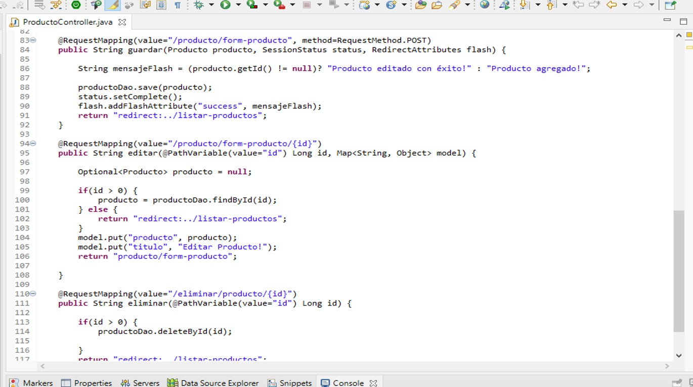

Link al repositorio en GitHub
Ir a la pagina
Para acceder a la aplicación se puede hacer sin ningun permiso, pero para acceder a todas las funciones, se proporciona el usuario: admin y la contraseña: 12345.
Problema
La empresa lleva a cabo la administración de su información de forma manual, es decir, todo lo relacionado a la información de sus clientes, productos lleva el control todo por escrito, así como también sus ventas y la relación que guardan con sus clientes y productos.por lo que llevar el control de esta manera, ha acarreado a una serie de problemas, por ejemplo, el acceso a su informacion es poco eficiente, asi como tambien la acumulacion excesiva de papel, y los errores que surgen al momento de escribir.
Solución
Debido a que uno de los requerimientos del cliente, era que quería acceder a la información tanto desde su local como desde su casa, sin trasladar la computadora, se optó por realizar una aplicación web, se utilizó como lenguaje de servidor java, pero para agilizar un poco el desarrollo se optó por utilizar el framework para Java Spring boot y el motor de plantilla Thymeleaf.
Desarrollo
Se trabajó principalmente con el módulo de spring Boot que es parte del core de Spring Framework, se utilizó herramientas que trae consigo como la interfaz CrudRepository, aunque también se desarrollaron nuestras propias interfaces sobre todo, para crear nuestros propios queries, diseñados especialmente para cumplir con las necesidades de la aplicación. También se trabajó con el módulo de Spring Security, sobre todo para agregar seguridad a nuestra aplicación, y no tener que preocuparnos por esta parte, la aplicación se puede acceder, y ver la lista de clientes, y productos, pero solo permite modificar información, si el usuario está autenticado como un usuario admin. La aplicación muestra las opciones de acuerdo al tipo de rol con el que se autenticó el usuario. La aplicación en la parte del control de ventas, muestra su detalle así como también tiene la opción de descargar en otros formatos como son en PDF y XLSX. También soporta el multilenguaje, se tiene la opción de visualizar la aplicación en los lenguajes de español o inglés.
Marco de Trabajo
Se muestran a continuación algunas de las tecnologías usadas en el desarrollo del proyecto.
Tecnologías Usadas::
- Java: En esta ocasión se utilizó el framework de SpringBoot.
- MySQL: Como gestor de Base de Datos.
- Thymeleaf: Para interactuar con la informacion por parte del backend, se utilizo este motor de plantillas.
- Javascript: Para dar funciones dinamicas a la aplicación.
- Boostrap: Para dar estilos a la aplicación.
- FontAwesome: Iconos para dar mayor estilos y mejor apariencia visual
Ejemplo de Código
En el siguiente se puede observar el código correspondiente al controlador de la entidad de Producto, en este se puede observar las funciones basicas de un CRUD guardar, editar y asi como eliminar.
Imagenes de muestra
En el siguiente slider se muestran algunas imágenes acerca del funcionamiento de la aplicación.